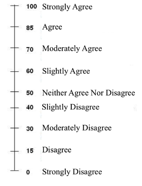

I'd like to get your feelings about the political advertisement that you are going to watch on the next screen I’ll show you a statement about the ad and I'd like you to rate the extent to which you agree or disagree with the statement using something we call a response dial. To go up on the response dial (indicating that you are more in agreement with the statement), click on the right (or up) arrow. To go down on the response dial (indicating that you are more in disagreement with the statement), click on the left (or down) arrow. Moving the slider between the 50 and 100 marks mean that you generally agree with the statement. Moving the slider between 0 and 50 mean that you don’t agree with the statement and that you generally disagree with the statement. You would leave the slider at 50 if you neither agree nor disagree with the statement.
To help you understand these instructions, we created a sample scale that outlines what each value on the slider might mean in terms of your agreement or disagreement with the statement.
